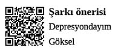

Depresyon Profesyonelleri
Buhranlı iklimlerin asit yağmurlarında şemsiyesiz gezen profesyoneller...
“Sen özelsin, eşsizsin ve çok değerlisin. İstediğin her şey olabilirsin. Ateşte yürüyebilirsin. Mermiye kafa atabilirsin. Hayallerinden asla vazgeçme! Kendini sev, kendine inan; o zaman her şey mümkün olur...” söylemleri ile başlar, depresyon filminin ilk karesi.